Carolles 2006

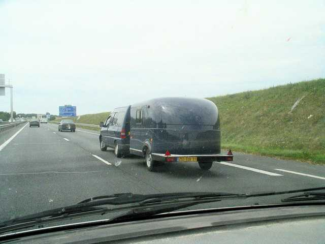
Quatrièmes Week-end du Vent à Carolles-Plage et à Champeaux. A Champeaux : les monofils sur un site extraordinaire que vous verrez et à Carolles-Plage : Traction, Chars à voile et à CVs, Kayaks, Kite-surf, Boomerang, etc... Tiens, sur la route, le train des Pirates...

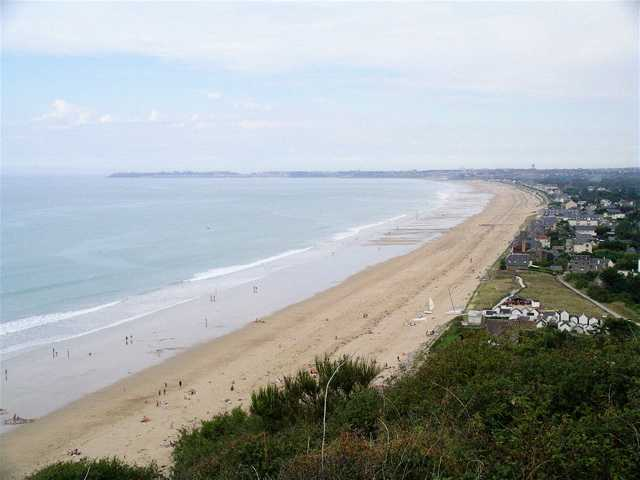
La plage est splendide, vue des pentes des falaises. Carolles-Plage s'arrête à la prairie verte, mais c'est bien suffisant...

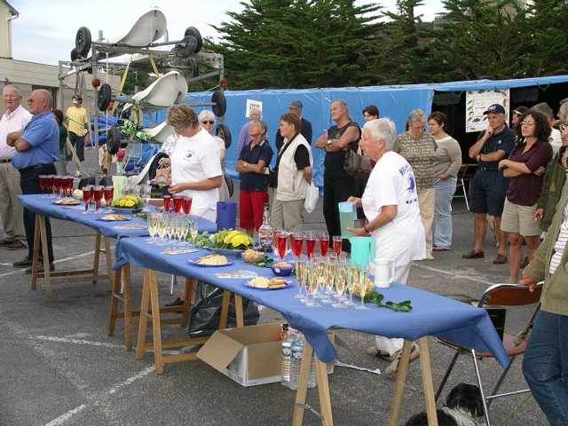
Déjà, le vendredi soir, un petit pot sur la place entre les barnums des différents participants !

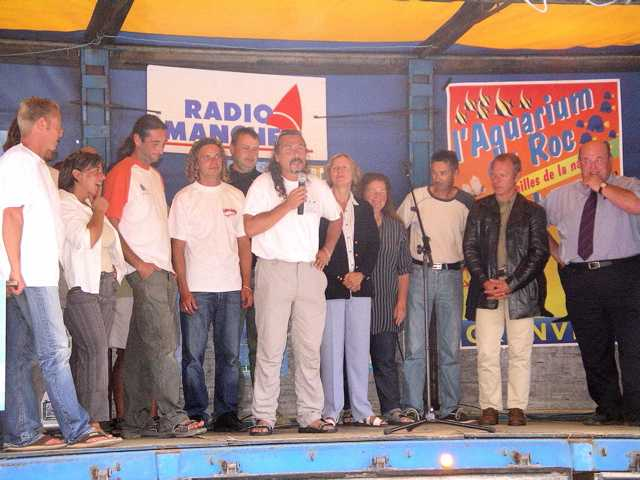
Avant de boire, chaque représentant de discipline présente celle-ci et ce qui est offert : initiation, participation... Yves explique la Traction et le char à CV... Claudine attend son tour pour le monofil, avec largages, ateliers, etc.

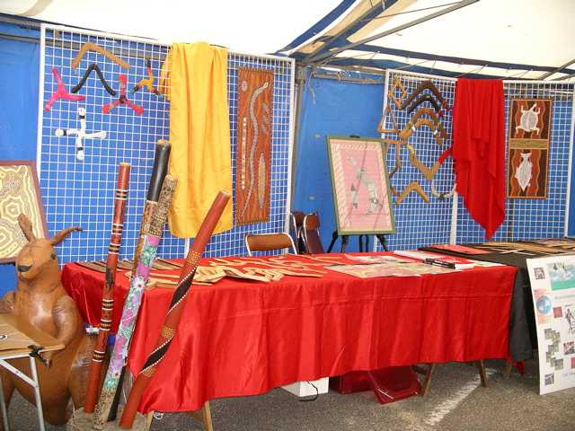
Il y a aussi un représentant du boomerang, beau stand mais on ne le verra guère "voler", trop de vent !...

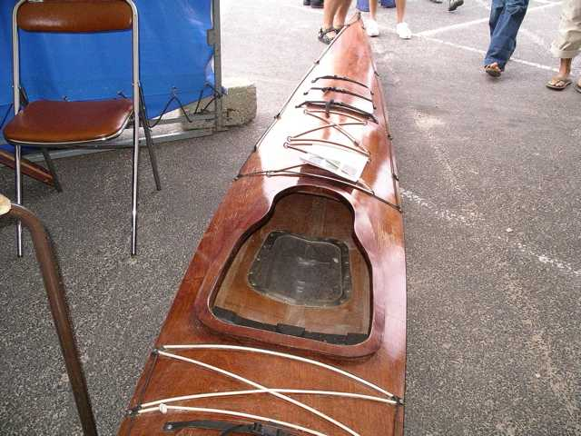
Egalement présent, le kayak, plastique en général sur la plage, mais des spécialistes du bois ont conçu et réalisé celui-ci, magnifique et plein d'options comme le fond transparent...

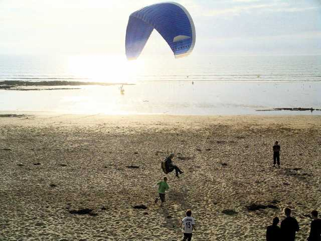
Les parapentistes du coin ont un beau site à exploiter, avec vol dans l'onde sur le coin de la falaise. Mais le vent sera trop fort sauf samedi matin, et encore... En plus, la Sécu leur cherchera noise, parce que, lors des initiations, ils décollent les élèves à 20 cm du sol !

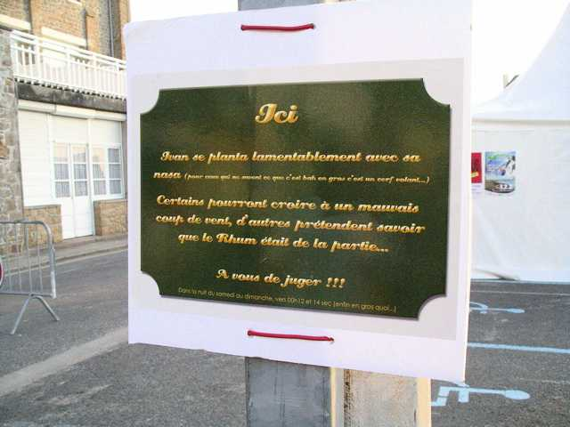
Ivan est déjà venu l'année dernière et "son" réverbère porte une plaque en souvenir de son "passage"...

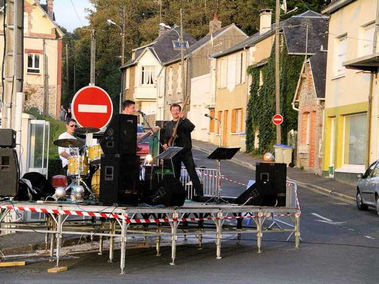
En fin d'après-midi et en soirée un orchestre de rock classique (Eric Clapton, Jimmy Hendricks, etc.) pas nombreux mais bon.

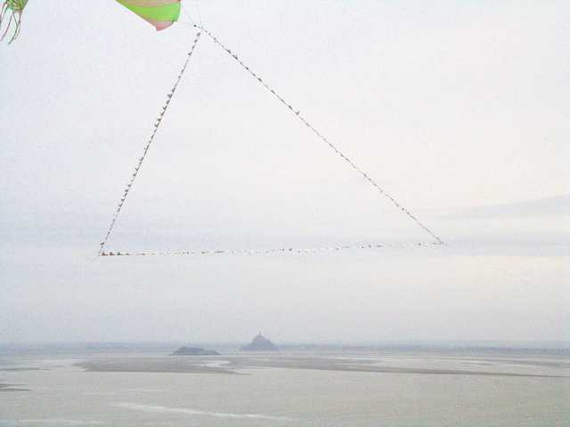
Sur le site des monofils, vue splendide sur le Mont-Saint-Michel le samedi matin. Claude a monté son "triangle", un peu plus petit que celui des Mouchague, mais quand même respectable...

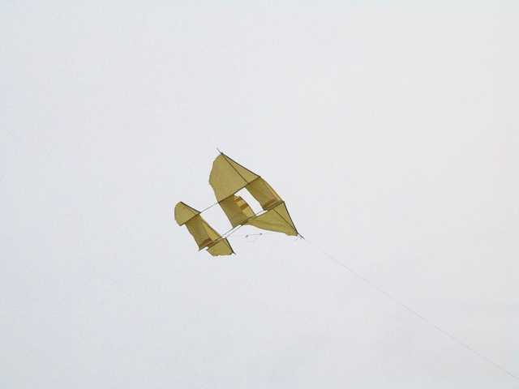
Ce Plano ne date pas d'hier, mais soutient encore bien le vol, même s'il s'effiloche un peu !

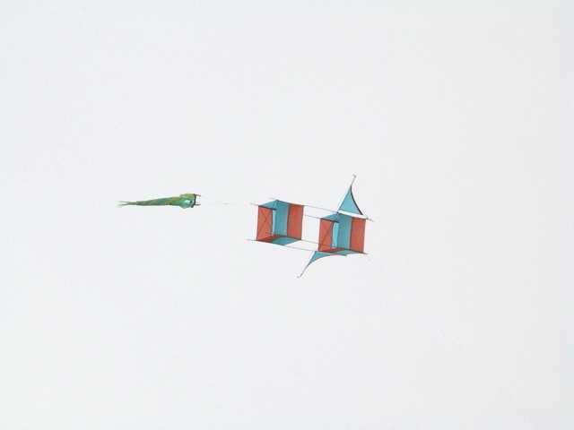
Il y a aussi une boîte en losange avec des ailes, petites heureusement vu le vent...

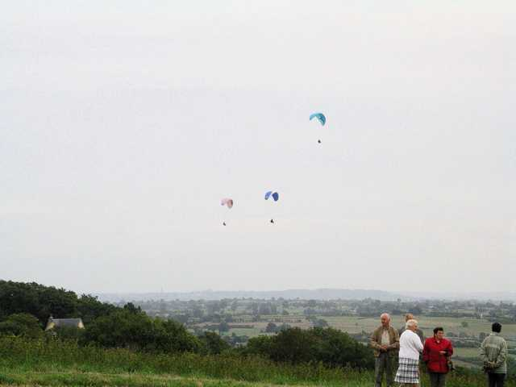
Le vent n'est pas encore trop fort le matin, et les meilleurs parapentistes feront un petit vol le long de la falaise !

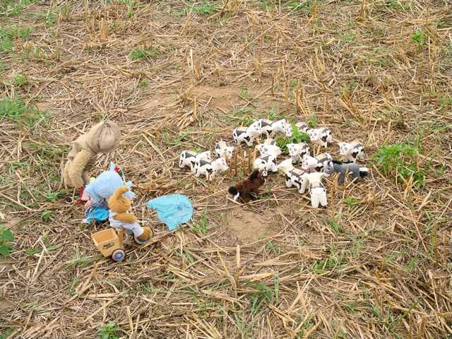
Peu de JdVs, Thierry a amené le sien, normand, bien sûr !

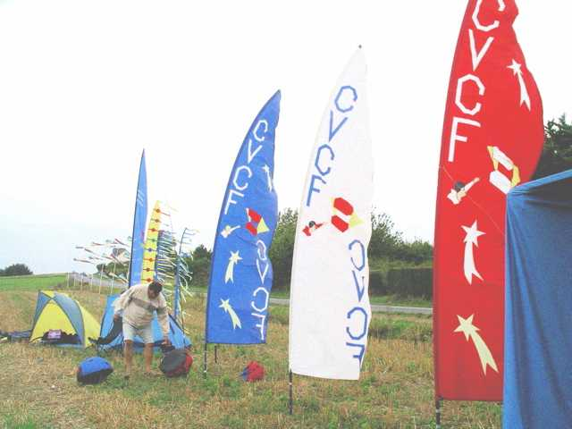
Le CV Club Celtique a monté les bannières CVCF, et Thierry place sa famille coccinelle !

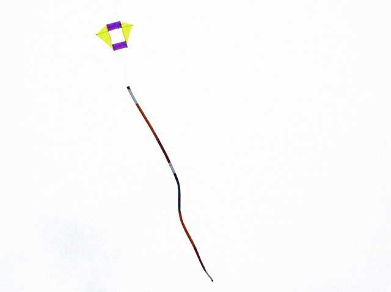
En vol, le "Madiot" CVCF de Yannick. Aux dernières nouvelles, ce CV ne serait pas un Madiot (voir reportage de Meudon pour le vrai), ni un Georges, composé de 2 cadres indémontables reliés par des barres verticales, mais un cerf-volant courant à l'époque et dont je ne sais pas le nom !

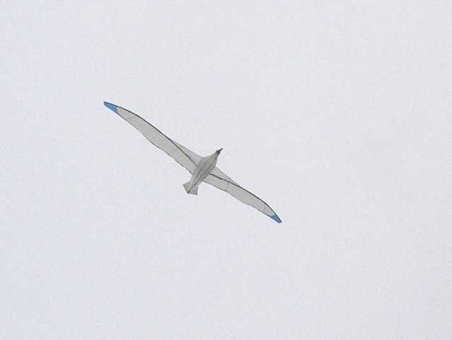
Le samedi, j'ai fait voler mon Albatros2, bien, mais il a fallu le descendre vers 16h30, le vent étant monté progressivement tout au long de la journée !

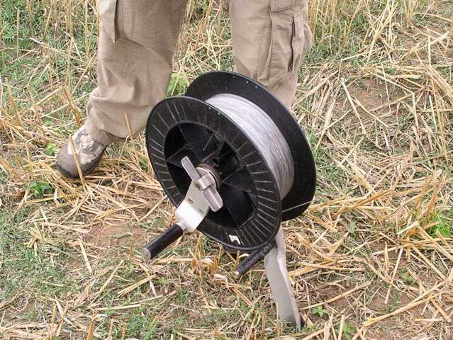
Loïc avait sorti son dévidoir à piquet et à frein à disque central (avec garnitures en bois d'arbre...).

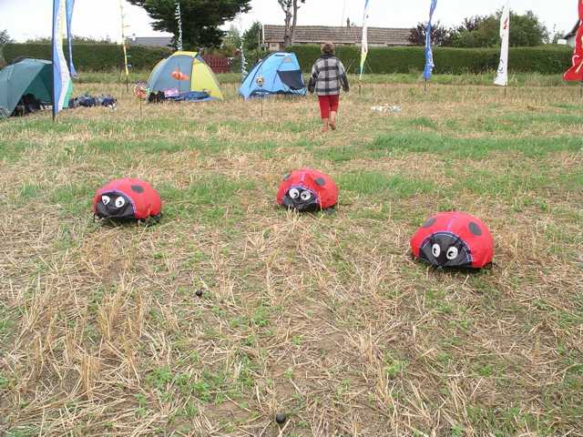
Claude aussi, s'est mis aux coccinelles sauteuses. Sur les éteules, ça ne sautait pas bien, pourtant les siennes ont les bandes Gordini !

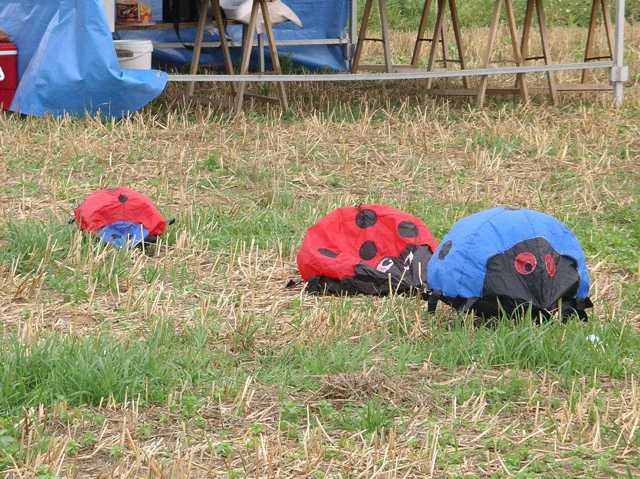
La "famille" de Thierry, le papa, la maman et le bébé métissé...

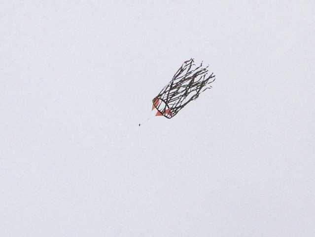
Une amusante turbine qui tourne bien et sans s'emmêler !...

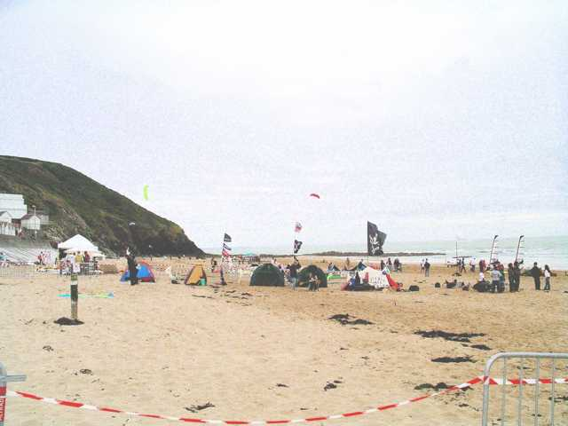
Fin d'après-midi, les monofils ont replié cause vent, mais sur la plage, le cirque tractionniste s'éclate, avec beaucoup de public intéressé...

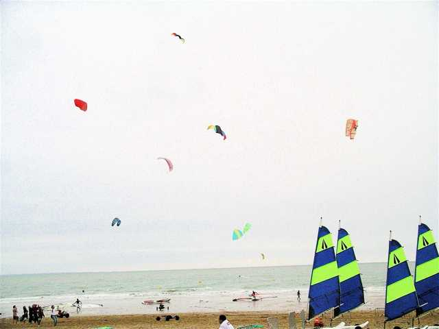
Et de la voile, il y en a, Nasas, traction à caissons, chars à CVs, chars à voile, kite-surfers à caissons ou à vessies gonflables !

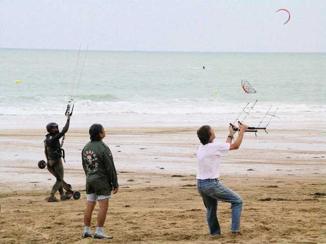
De l'initiation aussi, surtout avec les Nasas par les Pirates, pour montrer aux clients que ça tire d'enfer, même avec 0,80 m2 !

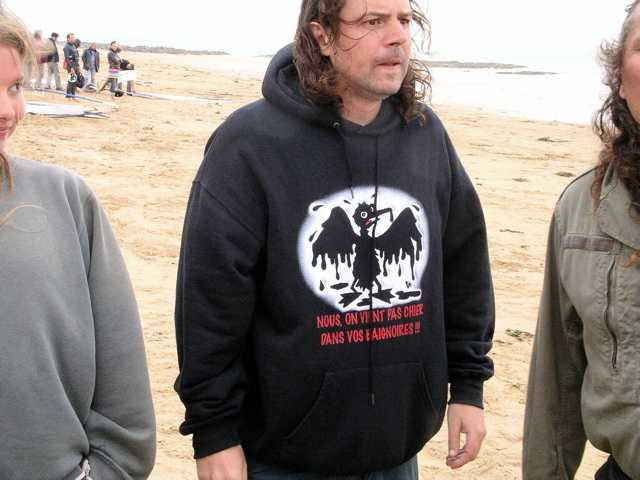
Un partisan anti-pollution défend les oiseaux de mer crûment !

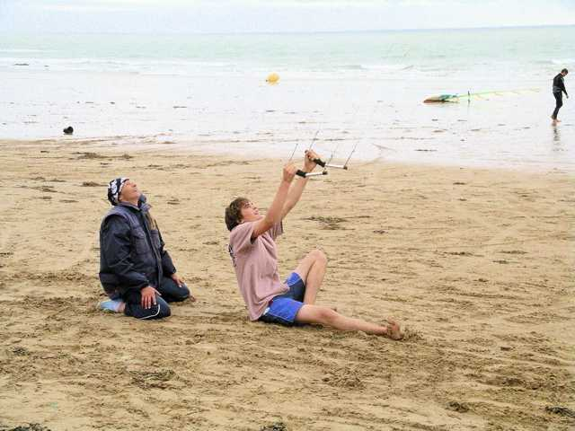
Corinne aussi initie vaillamment à la Nasa !

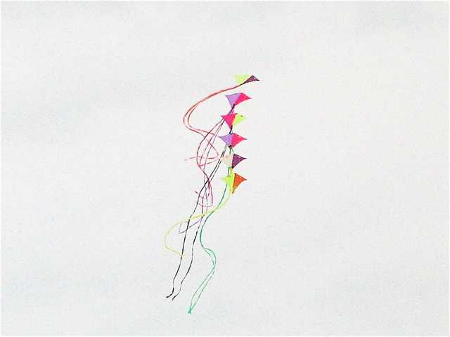
Même sur la plage, il y a des monofils !

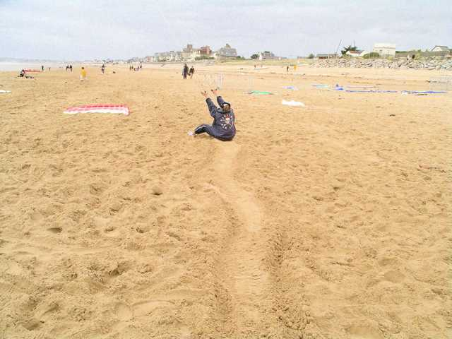
Corinne pratique aussi pour le plaisir ! Ca égalise le sable labouré par les tractionnistes...

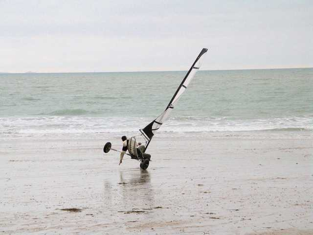
Les chars à voile, ou plutôt un "kart" à voile, ultra-compact, s'amusent comme des fous !

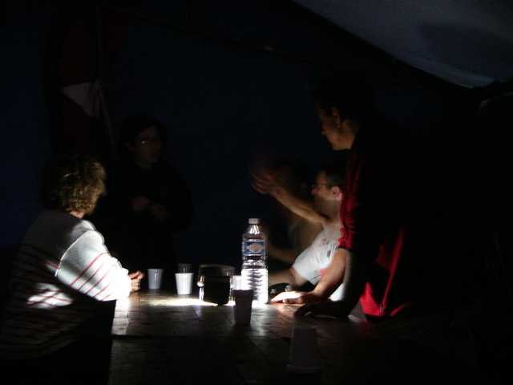
Le soir, dîner sous la tente. On attend. Longtemps. Tellement qu'il fait nuit avant les hors d'oeuvres (d'ailleurs, il n'y a pas de hors-d'oeuvre...) ! Chacun va chercher son petit éclairage perso : lampe frontale, lampe de signalisation, etc, c'est très intimiste...

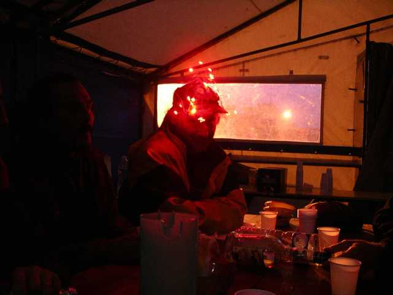
Claude amène sa casquette à guirlande, très jolie, mais ça ne va éclairer que son assiette !

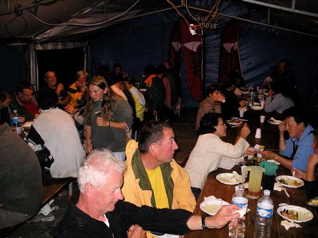
Enfin, on nous monte avec bien des efforts (voir montage "pro" au plafond...)... 2 baladeuses de 60 W. Et aussitôt, on nous en reprend une car le cuistot cuisine... avec une bougie dans un verre !

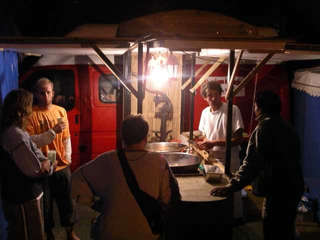
Bon, avec sa baladeuse, il va pouvoir voir si c'est cuit, et on mange enfin ! Au moins, la paella n'est pas mauvaise, et abondante...

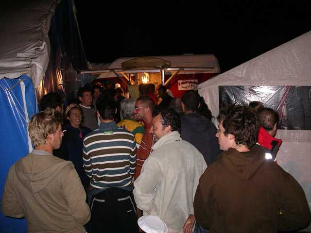
On mange, enfin ceux du 1er service, car quand on sort après la paella (pas de dessert, bien sûr...) vers 23h 30, la queue s'allonge pour le 2ème service, dont la cuisson a commencé quand la première poêle a été vidée !

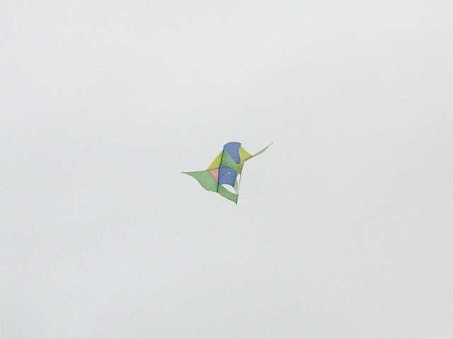
Le dimanche matin, vent fort. Christian est arrivé et monte son Météo, cerf-volant résistant.

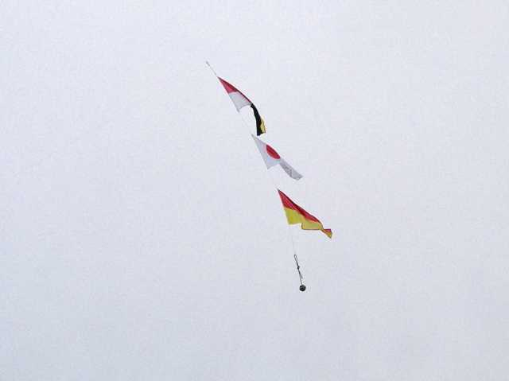
Laurent a un sled à poches, il accroche dessous des fanions lestés d'une belle grosse pomme de marin en cordage qu'il a faite lui-même autour d'une balle de tennis pleine de sable !

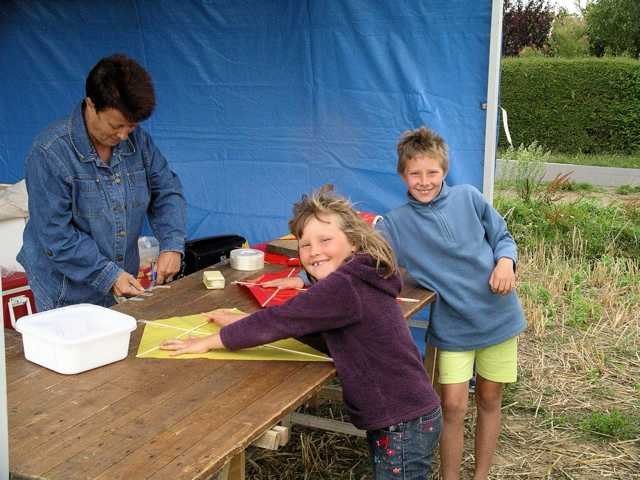
Claudine et Jacqueline ont repris les ateliers pour enfants. Elles vont être dévalisées et seront obligées dépasser le quota alloué en prenant sur les réserves du club !

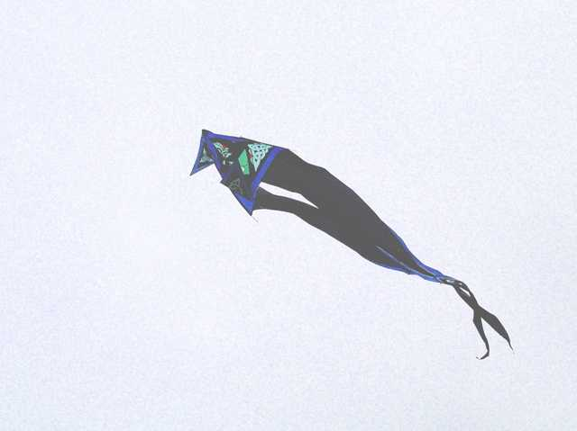
Claude a sorti un de ses cerfs-volants celtiques somptueusement décorés. Il mettra beaucoup de choses en l'air et au sol aujourd'hui...

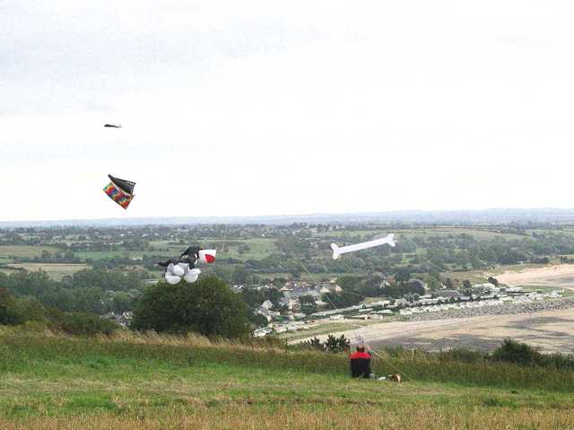
Thierry a monté sous son sled ce chienchien malheureux qui va voir son os se balancer sous son nez toute la journée !

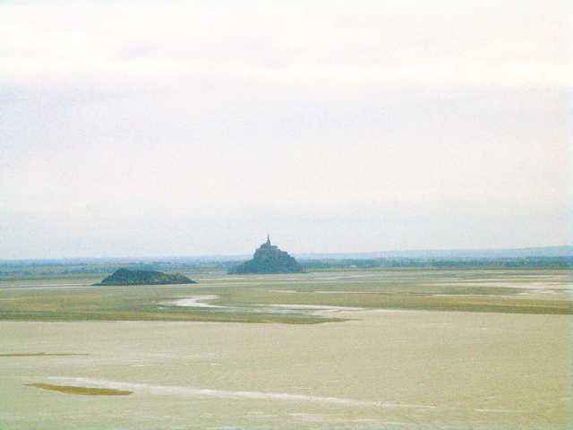
Pendant ce temps, les nuages passent et le Mont-Saint-Michel se teinte d'éclairages variés !

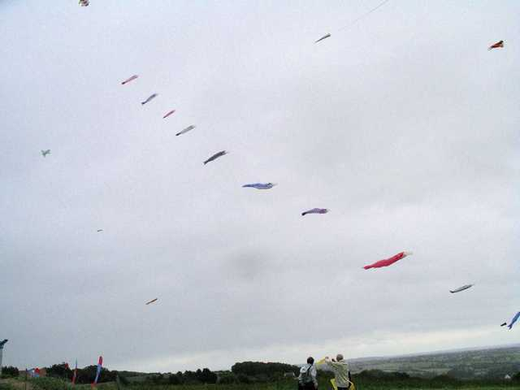
Sous son flow-form modifié pour être stable, Christian expose toutes ses carpes, jusqu'à 6 m de long !

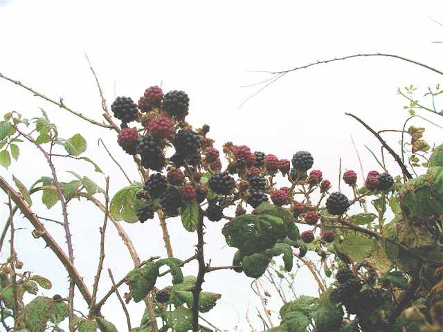
Suite à un sauvetage de cerf-volant avec Yannick, nous avons pu apprécier les mûres qui poussent en abondance aux environs... Ca a enrichi les desserts et Yannick a rempli son tupperware pour faire des confitures...

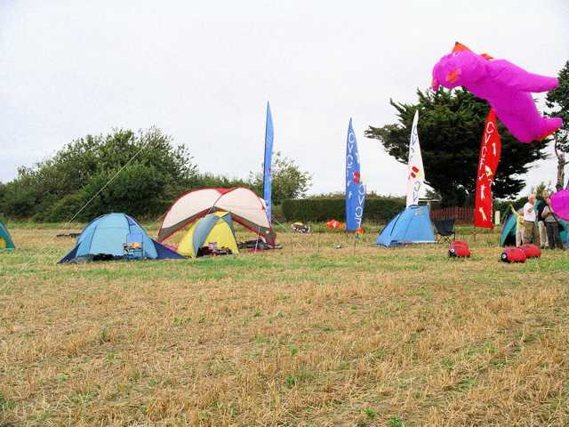
Prévoyant, Loïc a sorti sa grande tente triangulaire ! Il faudra seulement ajouter le côté quand il pleuvra...

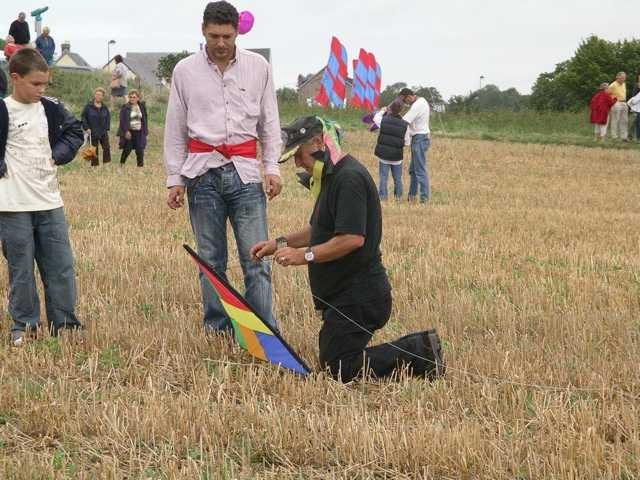
Pas encore content, Claude se lance dans le pilotable ! Pas trop facile dans les basses couches très turbulentes !

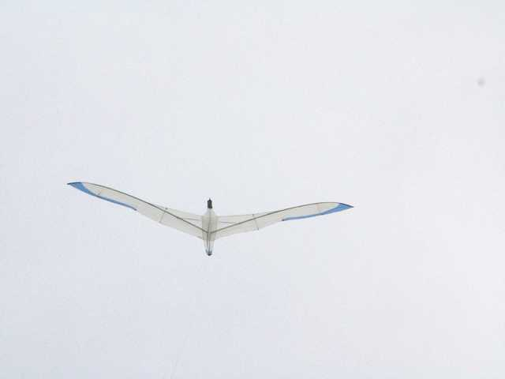
Turbulent en bas, trop fort en haut, je n'ai pas réussi à faire voler mon Condor. J'ai dû revenir à mon vieil Albatros Premier construit en 2000 mais qui se défend toujours bien dans les vents forts. Il flappe seulement beaucoup...

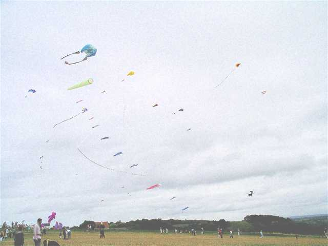
Finalement, malgré le vent et la pluie vers midi, il y a eu pas mal de monde en l'air, de quoi contenter le public...

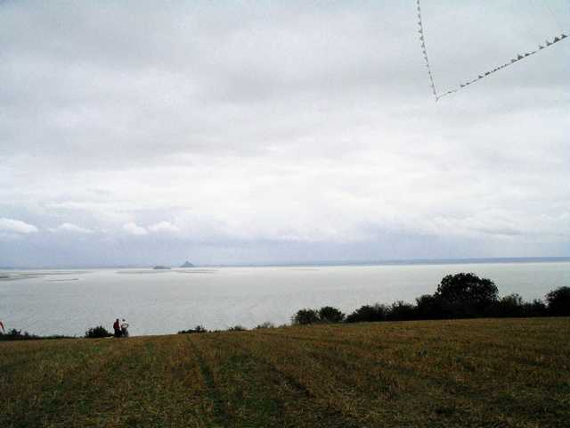
...et toujours le Mont, plus éclairé que nous, dans une trouée...

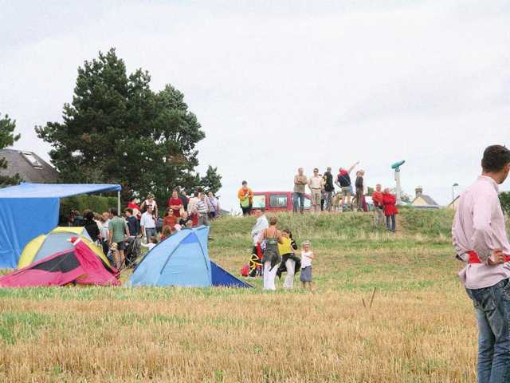
Le public est venu, finalement assez nombreux pour un festival en pleine campagne...

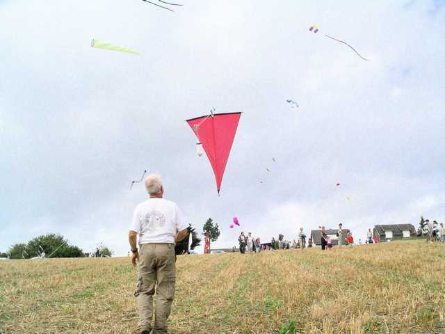
Pour les séduire, Loïc a fait marcher sa navette, avec lâchers de bonbons, Diplôme de parachutage pour les nounours et largage de confettis...

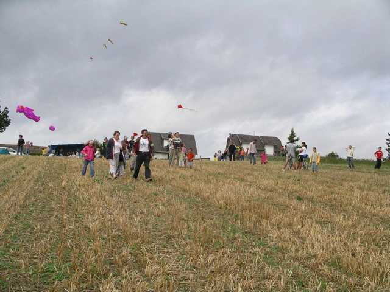
Il a été récompensé par l'assistance qui a descendu vers lui tout le terrain...

Bon, l'un dans l'autre, c'était sympa et on s'est bien amusé, le public aussi. Merci à Nathalie, et laissons donc le Mont à ses effets d'éclairage...